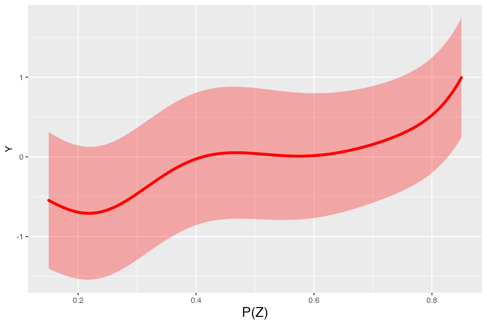

uniform_con_gen
Toshiki Tsuda (toshiki.tsuda@yale.edu), Yanchun Jin (chnjyc@gmail.com), Ryo Okui (okuiryo@e.u-tokyo.ac.jp)
uniform_con_gen.RmdFunctions
The mteucb provides four functions as below:
-
p_hut_gen(): Estimation of propensity score thourgh maximum likelihood estimation. -
beta_hut_gen(): Estimation of finite parameters by partially linear estimation. -
unif_gen(): Computation of uniform confidence bands for an MTE function given the parametric part of MTE is known. -
uniform_con_gen(): Computation of uniform confidence bands for an MTE function given data.
In this page, we introduce how to use unif_con_gen() for
obtaining a confidence band of an MTE function.
Arguments
-
outcome_name: The name of the outcome -
covariate_name: The name of covariate -
instrument_name: The name of instrument variables -
treatment_name: The name of a treatment variable -
data: data.frame to be used for the estimation of MTE -
familiy: The distribution used for the calculation of the propensity score. You can choose “probit” or “logit”. The default choice is “probit”. -
trim: To mitigate the effect of ill behavior of estimated propensity scores, we set those estimated values less than or larger than the value of trim as the value of the value of trim. The default choice is “0.01”. -
intercept: ‘TRUE’ or ‘FLASE’ option to decide whether you include an intercept for estimating the propensity score or not. The default choice is ‘TRUE’. -
se_type: The sort of standard error sought. The options are “HC0”, “HC1” (or “stata”, the equivalent) , “HC2” (default), “HC3”, or “classical”. -
bw: The bandwidth used in estimating the nonparametric part of MTE -
l_eval: The minimum value of evaluation points for the estimated MTE -
u_eval: The maximum value of evaluation points for the estimated MTE -
kernel: The kernel function used in estimating the nonparametric part of MTE. You can choose ‘gaussK’ (gaussian kernel), and ‘EapK’ (Epanechinikov kernel). The default choice is ‘gaussK’. -
covariate_value: A covariate value to plot the estimate MTE -
significance_level: The significance level for the construction of uniform confidence band
Returns
uniform_con_gen() returns a list that contains the
following five elements:
Data: A data frame equipped with the estimated propensity scoreEstimation: A data frame of the following results: evaluation point of MTE, estimated value of MTE, standard error of MTE, Lower bound of a confidence band , Upper bound of a confidence band ranging from \(0.05*\lceil \text{l_eval}/0.05\rceil\) to \(0.05*\lfloor \text{u_eval}/0.05\rfloor\) with width \(0.05\).Beta: Finite parameters of an MTE function estimated by partially linear estimationSE: The standard error of estimated parameters
-critical_value: A critical value corresponding to the
significance level chosen
-
Plot: A list that contains the ggplot elements for uniform confidence band
Example
First, we generate the data used for the estimation of MTE, icluding outcome, covariates, instruments, and tretament.
# Load the package
library(mteucb)
library(MASS)
# Generate artificial data
#: The number of cross-sectional units
# tau: The length of time series
# continuous: Generate a continuous (resp. discrete) covariate if it is TRUE (resp. FALSE).
set.seed(1)
#Generate covariates and instruments with sample size 2000.
SS<-2000
X1<-rnorm(n=SS,mean=0,sd=1)
X2<-rnorm(n=SS,mean=0,sd=1)
X3<-rnorm(n=SS,mean=0,sd=1)
X4<-rnorm(n=SS,mean=0,sd=1)
Z1<-rnorm(n=SS,mean=0,sd=1)
Z2<-rnorm(n=SS,mean=0,sd=1)
Z3<-rnorm(n=SS,mean=0,sd=1)
Z4<-rnorm(n=SS,mean=0,sd=1)
#Generate unobserved heterogeneity and errors to generate outcome and treatment
E0<-c(1,0.5,0.3)
E1<-c(0.5,1,0.8)
E2<-c(0.3,0.8,1)
E<-cbind(E0,E1,E2)
E4<-mvrnorm(n=SS,mu=c(0,0,0),Sigma=E)
U0<-E4[,1]
U1<-E4[,2]
V<-E4[,3]
Expl<-cbind(X1,X2,X3,X4)
Instr<-cbind(X1,X2,X3,X4,Z1,Z2,Z3,Z4)
PInstr<-cbind(Z1,Z2,Z3,Z4)
#Define parameters.
beta0<-c(0.5,0.1,-0.1,-0.5)
beta1<-c(0.8,0.4,-0.4,-0.8)
ganma0<-c(0.4,0.4,0.4,0.4,0.3,0.3,0.3,0.3)
#Generate outcome and treatment
D<-numeric(SS)
for(i in 1:SS){
if ((ganma0 %*% (Instr[i,]))>V[i]){
D[i]=1}
}
Y<-numeric(SS)
for(i in 1:SS){
Y[i]<-D[i]*((beta1%*%Expl[i,])+U1[i])+(1-D[i])*((beta0%*%Expl[i,])+U0[i])
}
demo=as.data.frame(cbind(Y,Expl,PInstr,D))We can check the generated variable by using head().
head(demo)
#> Y X1 X2 X3 X4 Z1 Z2
#> 1 0.1702768 -0.6264538 -0.88614959 -1.1346302 -0.61882708 0.2637034 -0.8043316
#> 2 1.8243183 0.1836433 -1.92225490 0.7645571 -1.10942196 -0.8294518 -1.0565257
#> 3 0.6071792 -0.8356286 1.61970074 0.5707101 -2.17033523 -1.4616348 -1.0353958
#> 4 0.7473837 1.5952808 0.51926990 -1.3516939 -0.03130307 1.6839902 -1.1855604
#> 5 1.5750997 0.3295078 -0.05584993 -2.0298855 -0.26039848 -1.5443243 -0.5004395
#> 6 1.7978026 -0.8204684 0.69641761 0.5904787 0.53443047 -0.1908871 -0.5249887
#> Z3 Z4 D
#> 1 -0.93910663 0.5232667 0
#> 2 1.39366493 0.9935537 0
#> 3 1.62581486 0.2737370 0
#> 4 0.40900106 -0.6949193 0
#> 5 -0.09255856 -0.7180502 0
#> 6 0.20609871 -0.1019895 0To generate a confidence band, we set some parameters
Supp_P_hut_U<-0.85
Supp_P_hut_L<-0.15
O_SS<-1000
B2<-seq(Supp_P_hut_L,Supp_P_hut_U,length=O_SS)
covariate_value<-c(0,0,0,0)By using unif_con_gen(), we obtain a confidence band of
a MTE function with some other information.
Final_Result_Ex<-uniform_con_gen(outcome_name="Y",
covariate_name=c("X1","X2","X3","X4"),
instrument_name=c("Z1","Z2","Z3","Z4"),
treatment_name= "D",
data=demo,
family="probit",
trim=0.01,
intercept=TRUE,
se_type="HC2",
bw=0.1,
l_eval=0.15,
u_eval=0.85,
covariate_value=covariate_value,
significance_level=0.05
)
head(Final_Result_Ex$Data)
#> Y X1 X2 X3 X4 Z1
#> 1 -1.832737 0.73832471 -1.3102835 1.61034155 1.6083702 0.5471262
#> 2 -2.476944 -0.30538839 -0.2080786 1.36829791 0.1856225 -0.4198042
#> 3 -1.116913 -0.04493361 1.2912720 -0.08479864 1.3156956 1.0565484
#> 4 -1.912261 0.94383621 -0.8751468 1.66760644 1.4469536 -2.2305143
#> 5 1.726090 0.59390132 1.4251896 0.30185634 1.0134914 -0.7637768
#> 6 2.523938 0.61982575 2.3833280 -0.09983139 -0.6731739 -0.5497419
#> Z2 Z3 Z4 D P_hut
#> 1 0.47196813 -0.46000136 1.6316872 1 0.9359741
#> 2 1.25931803 -1.46018697 -2.0730307 1 0.4289610
#> 3 -0.08022106 1.04643156 -0.6111537 1 0.9180863
#> 4 -0.09943981 1.05350591 0.2318669 1 0.8162267
#> 5 1.85777954 0.05590213 -0.9673166 1 0.9354695
#> 6 -1.61676311 0.65319738 -0.5557610 1 0.6779880
Final_Result_Ex$Estimation
#> P_hut MTE SE LB of UCB UB of UCB
#> 1 0.15 -0.54599720 0.4206323 -1.4027188 0.3107244
#> 2 0.20 -0.69420539 0.4109986 -1.5313055 0.1428948
#> 3 0.25 -0.66520261 0.4075206 -1.4952190 0.1648138
#> 4 0.30 -0.46237077 0.4066253 -1.2905637 0.3658221
#> 5 0.35 -0.21023036 0.4070323 -1.0392521 0.6187914
#> 6 0.40 -0.02577382 0.4077988 -0.8563568 0.8048092
#> 7 0.45 0.04848320 0.4073579 -0.7812018 0.8781682
#> 8 0.50 0.04216056 0.4038453 -0.7803702 0.8646913
#> 9 0.55 0.01461326 0.3960130 -0.7919650 0.8211915
#> 10 0.60 0.01589843 0.3842433 -0.7667080 0.7985048
#> 11 0.65 0.06513431 0.3709414 -0.6903794 0.8206480
#> 12 0.70 0.15767300 0.3596004 -0.5747420 0.8900880
#> 13 0.75 0.29425467 0.3534008 -0.4255334 1.0140428
#> 14 0.80 0.52357965 0.3548879 -0.1992371 1.2463964
#> 15 0.85 0.99496720 0.3670508 0.2473776 1.7425568
Final_Result_Ex$Beta
#> beta0_est beta1_est
#> X1 0.54157944 0.8229410
#> X2 0.03497841 0.3827321
#> X3 -0.08277620 -0.4457280
#> X4 -0.45948960 -0.7678714
Final_Result_Ex$SE
#> beta0_se beta1_se
#> X1 0.04659124 0.04895943
#> X2 0.04649884 0.04673356
#> X3 0.04734397 0.04960917
#> X4 0.04492039 0.04554856
Final_Result_Ex$critical_value
#> [1] 2.819258
Final_Result_Ex$Plot